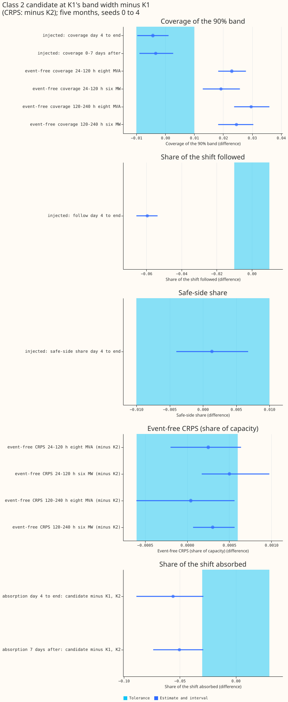
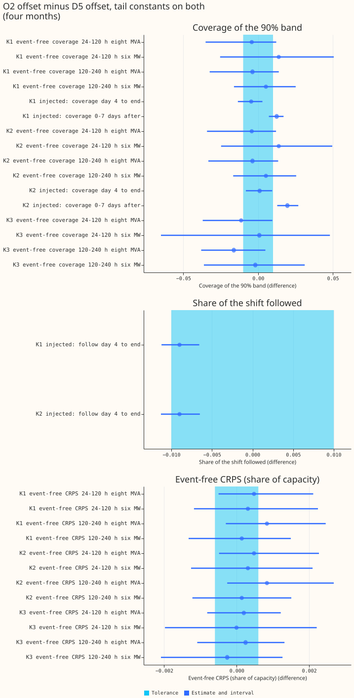
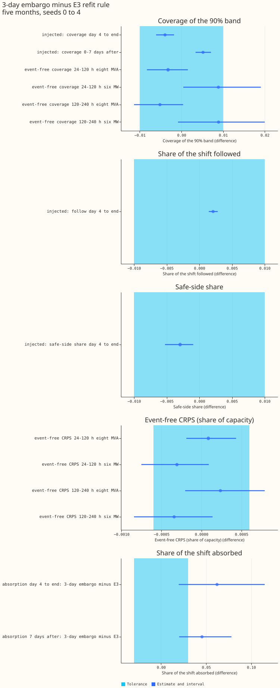
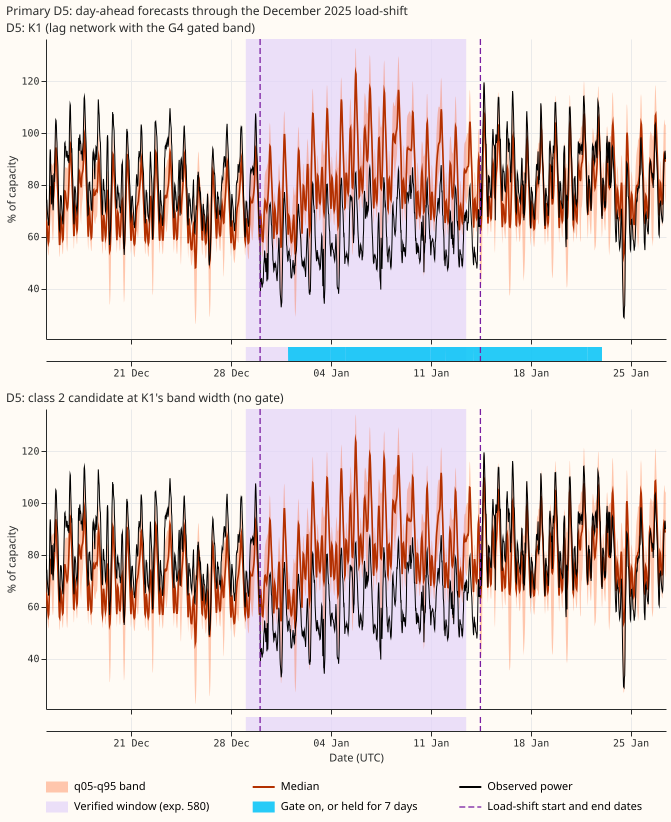
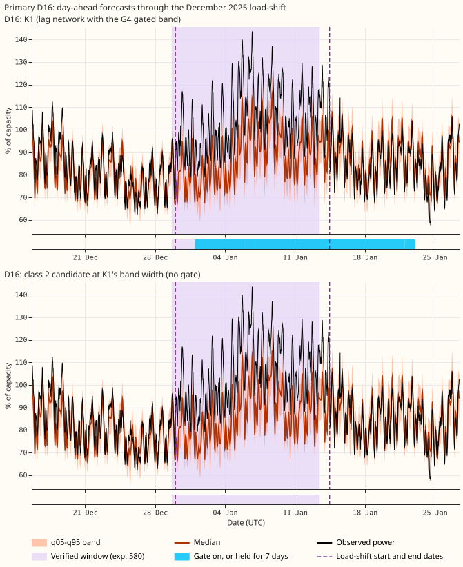
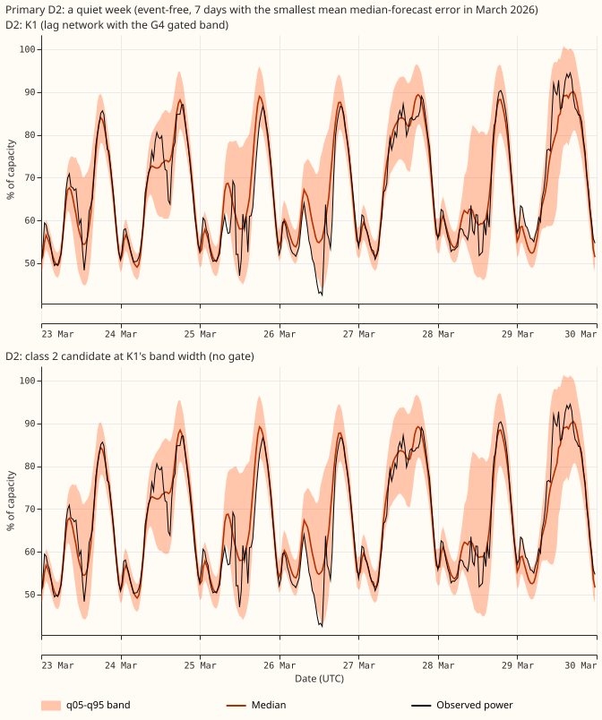
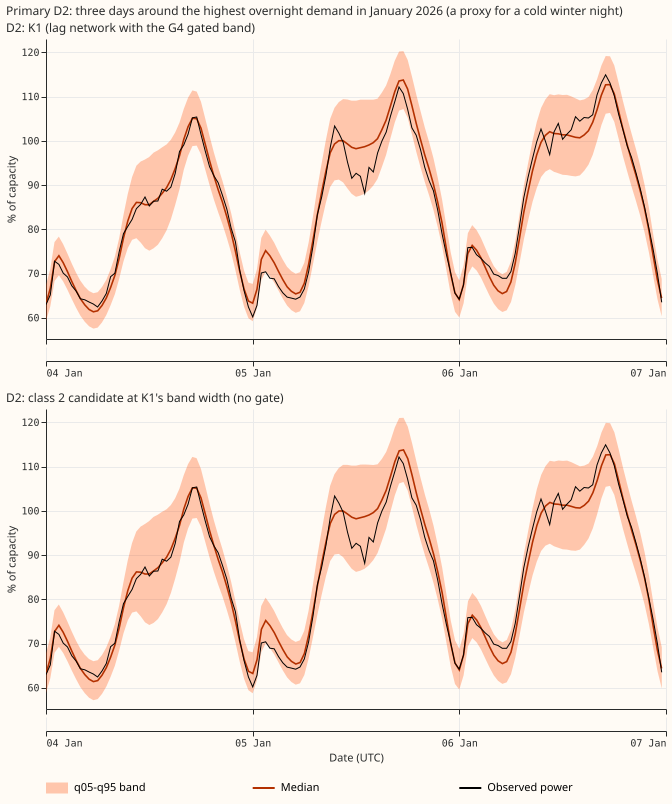
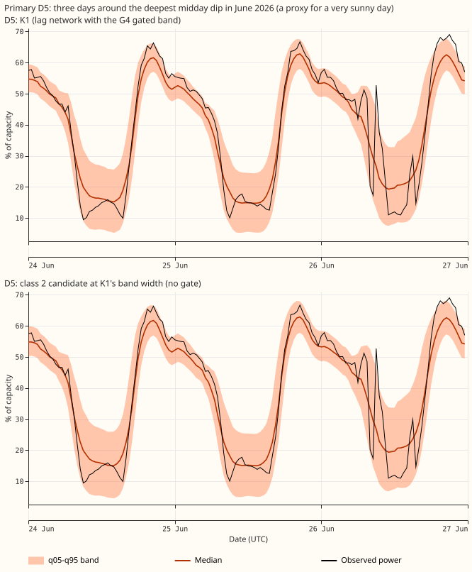

Do five seeds give intervals tight enough to show that the class 2 candidate can replace the gate, that O2 is equivalent to D5, and that dropping E3 changes absorption?
Experiment 612 left three claims unproven, because each rested on a single estimate that fell inside the tolerance (the largest difference we accept as no real change). This experiment refitted the neural networks behind them on three more seeds and replaced the estimates with intervals. We asked whether three changes can be made without changing the forecast by more than the tolerance. The three changes are the class 2 candidate for the gate, the steadier offset O2 for the slow offset D5, and the 3-day refit embargo for the E3 rule. We refitted each neural network on seeds 2 to 4, joined them to experiment 612's seeds 0 and 1, and scored the mean of the five seeds' quantiles on the five development months (2025-10, 2025-12, 2026-01, 2026-03, and 2026-06). The class 2 candidate matches K1's injected-load-shift coverage and safe-side share, but its event-free CRPS is not shown equivalent in 3 of 4 cells. The two other changes stay unproven, because five seeds left the intervals as wide as before.
Terms. Class 1, 2, and 3 are the three families of forecast network in experiment 612: class 1 is the lag network, class 2 adds neighbour summaries to it, and class 3 has no lags. D5 is the slow monthly offset that corrects the forecast level, and O2 is the steadier offset fitted from daily knots. Tail constants are two factors per group of Primaries and lead band that widen the outer quantiles, fitted on earlier months only. The injected bank is the set of synthetic load-shifts added to the readings. A cell is one pairing of Primary group (eight MVA or six MW) with a horizon band (24-120 h or 120-240 h). A Bonferroni interval is widened so that all counted contrasts in a family hold together. The minimum detectable effect (MDE) is half the interval width. A Primary is a primary substation: the eight MVA Primaries are metered in megavolt-amperes and the six MW Primaries in megawatts. K1 is the lag neural network with the G4 gated band (a band that widens when a load-shift is detected). K2 uses the same fitted networks as K1 without the gated band. K3 is the lag-free neural network. The class 2 candidate is K2 plus neighbour summaries and 50% signal dropout from experiment 610, scaled about its median so its band is as wide as K1's. E3 is a 7-day embargo on the newest rows of the daily refit, with half weight on the 7 days before that. Follow is the share of an injected load-shift's depth that the median forecast tracks, and a lower follow is better because the forecast should not track a shift it cannot know about. Absorption is the share the median forecast takes up when the network is refitted on rows that contain the shift. Safe-side share is the share of rows where the normal running arrangement (NRA, the load pattern without the load-shift) lies on the safe side of the band's edge. Coverage is scored against an estimate of the NRA. A contrast is equivalent only if its whole Bonferroni interval lies inside the tolerance: 0.01 for coverage, follow, and safe-side share, 0.03 for absorption, and 0.0006 for event-free continuous ranked probability score (CRPS), the minimum detectable effect of experiment 591.
Figures

Each dot is an estimate and each line its Bonferroni interval. Coverage and absorption are scored against an estimate of the NRA. The dot is the class 2 candidate at K1's band width minus K1 (CRPS: minus K2), with its Bonferroni interval (12 counted contrasts, plus 2 for absorption). The pale cyan band is the tolerance. Look at the top panel, where both injected intervals lie inside the band and every event-free coverage interval lies above it, and at the bottom panel, where absorption is lower but the intervals touch the band.

Each dot is the O2 offset minus the D5 offset, tail constants on both (30 counted contrasts). Look at how wide every event-free interval is compared with the band.

Each dot is the 3-day embargo minus E3 (12 counted contrasts, plus 2 for absorption). Look at the injected panels, where every interval lies inside the band, and at absorption, where E3 absorbs less.


The December 2025 load-shift at Primaries D5 and D16, one network per panel, day-ahead forecasts from 14 days before the start to 14 days after the end. The dashed lines are the start and end dates the maintainer gave. The pale shade is the window verified in experiment 580, about one day earlier. In both figures the observed power drops at the maintainer's start date and rises at the end date, so the maintainer's dates fit the readings better than the verified window. The blue strip under K1 is the gate: the stored gate state has it on from 1 January to 22 January inclusive, about 8 days after the end date, not over the whole axis. The candidate has no gate. Each figure is one Primary. Coverage is scored against an estimate of the NRA, which these panels do not draw.

A quiet week at Primary D2 in March 2026, chosen as the week with the smallest median-forecast error, so it shows a best case. K1's gate stays off, so no strip is drawn. The two bands are close to identical, because the candidate's band is scaled to K1's width; look at where the median sits relative to the observed power.

Three days at Primary D2 around the highest overnight demand in January 2026, a proxy for a cold winter night. K1's gate stays off, so no strip is drawn. Look at whether the observed power stays inside the band on the evening peaks.

Three days at a six MW Primary in June 2026 around the deepest midday dip, a proxy for a very sunny day. K1's gate stays off, so no strip is drawn. Look at whether the band covers the midday dips.
Results
- Seeds 0 and 1 reproduce; seeds 2 to 4 are new fits. Seeds 0 and 1 are experiment 612's stored fits. Seeds 2 to 4 are new fits, with pre-training and step-2 weights fitted afresh. Refitting K1 on seed 0 with the new code reproduced the stored fit to within 6e-7 in the median forecast, whereas seed 1 differs from seed 0 by 0.02. K3 with O2 had pre-training for seeds 0, 1, and 5 to 9 only, so every K3 contrast between O2 and D5 uses seeds 0, 1, 5, 6, and 7 for both offsets. Splitting the seeds into {0, 1} and {2, 3, 4} (K3: {5, 6, 7}) gives 15 contrasts whose sign differs between the two subsets, for example the class 2 safe-side share (+0.0027 against -0.0017), so the sign of those contrasts is not stable. The five-seed intervals are inside the tolerance for the injected class 2 coverage contrasts, while the two subsets alone are inconclusive on them.
- Class 2 candidate against K1: injected coverage matches within 0.01, event-free coverage is 0.02 to 0.03 higher. (12 counted contrasts; 2 more for absorption; band width set from the candidate's own month, as in experiment 612). Day 4 to the end: coverage -0.0043 (-0.0097 to +0.0011; mde 0.0054), safe-side share +0.0014 (-0.0040 to +0.0068), follow -0.0595 (-0.0657 to -0.0537, better). 0-7 days after the end: coverage -0.0033 (-0.0090 to +0.0027). Levels: K1 covers 0.926 and 0.918, the candidate 0.921 and 0.915. Event-free coverage is higher by 0.019 to 0.030 (all four cells above the tolerance) because the band is wider everywhere. Event-free CRPS minus K2: +0.0003 and +0.0005 at 24-120 h (intervals -0.0002 to +0.0006 and +0.0002 to +0.0010), 0.0000 and +0.0003 at 120-240 h (-0.0006 to +0.0006, and +0.0001 to +0.0006); one cell (six MW Primaries, 120-240 h) is equivalent. With each month's width set from the other four months, the injected contrasts move by at most 0.001.
- Absorption: the candidate absorbs less, but the result is inconclusive. (candidate against K1 and K2; experiment 599's E3 arm, 9 designs from day 4 to the end and 12 after, seeds 0 and 1, 2 counted contrasts). Day 4 to the end: -0.056 (-0.089 to -0.029; MDE 0.030). 7 days after the end: -0.050 (-0.074 to -0.029; MDE 0.022). Both upper ends lie just above -0.03, so neither interval lies wholly below the tolerance.
- O2 against D5: no event-free contrast is equivalent. (30 counted contrasts: 24 event-free and 6 injected; four months, because tail constants need an earlier month to fit on). One injected contrast is equivalent: K2 day 4 to the end, +0.0010 (-0.0082 to +0.0094). Half-widths are 0.021 to 0.057 in coverage and 0.001 to 0.002 in CRPS, Experiment 612's matching cells had half-widths of 0.038 and 0.0017, so seeds 2 to 4 did not narrow the intervals. Differences are O2 minus D5. K1 injected 0-7 days after the end: O2 covers 0.012 more (0.007 to 0.017); K2: +0.020 (0.013 to 0.026, better). K1 follow: -0.009 (-0.011 to -0.007; lower is better). K3 at the eight MVA Primaries: coverage -0.011 (24-120 h) and -0.016 (120-240 h), intervals reaching +0.010 and +0.005.
- E3 against the 3-day embargo: injected contrasts are equivalent, absorption is inconclusive. (12 counted contrasts; five months). Equivalent on all four injected contrasts: coverage -0.0040 (-0.0061 to -0.0018) and +0.0052 (+0.0034 to +0.0071), follow +0.0021, safe-side share -0.0029. Event-free, equivalent at the eight MVA Primaries at 24-120 h (coverage -0.0032, CRPS +0.0001) and inconclusive in the other six cells, with the six MW Primaries 0.009 more covered without E3 (0.0004 to 0.019 at 24-120 h). Absorption (experiment 599's E0 and E3 arms, 9 and 12 designs, 2 counted contrasts): the 3-day embargo absorbs 0.062 more from day 4 to the end (0.020 to 0.115) and 0.045 more in the 7 days after (0.020 to 0.078). The direction is clear and the size is inconclusive against 0.03.
- Predictions. P1 held (injected coverage intervals inside 0.01). P2 failed (O2 is not equivalent in K1 or K2 event-free). P3 held for the point estimates (+0.062 and +0.045 for the embargo minus E3), but each interval's lower end is 0.020, short of 0.03. P4 held: the half-width barely changed (K1, six MW Primaries, 24-120 h: 0.038 against 0.0385).
Recommended arrangements for the maintainer
| Class | Recommended network | Evidence now | One-line recommendation |
|---|---|---|---|
| 1 | K1 with E3, O2 or D5, tail constants | E3 matches the 3-day embargo on every injected contrast (intervals inside 0.01); O2 is not shown equal to D5 (half-widths 0.02 to 0.06) | Keep E3 (it absorbs less). Choose O2 for explainability and accept an unproven swap, or keep D5 to stay inside the evidence. |
| 2 | Candidate at K1's band width | Injected coverage -0.004 (-0.0097 to +0.0011); safe-side share +0.001; follow 0.051 against 0.110; event-free band wider by 0.02 to 0.03 coverage | It matches the gate on injected coverage and safe-side share. Its event-free CRPS is not shown equivalent in 3 of 4 cells, so replace the gate only if that is acceptable. |
| 3 | K3 with tail constants | O2 against D5 on seeds 0, 1, 5, 6, 7: coverage -0.011 to -0.016 at the eight MVA Primaries, intervals include 0 | Keep D5 until a test with more Primaries shows O2 is equal. |
Checks
-
Median minus mean forecast. Not computed: these forecasts are stored as 11 quantiles, with no mean.
-
Why prediction P2 failed. The explanation tested was that the interval width comes from resampling over 16 Primaries and 5 months, not over seeds. The half-width did not change with five seeds, which supports it.
Not run
- Absorption of K1 and the candidate on seeds 2 to 4: the 12-design absorption fits were not repeated, so absorption keeps seeds 0 and 1.
- K1 and K3 absorption with O2.
- July 2026 onwards is untouched.
Reproduction notes
- Code reused (copied into this folder). Experiment 612's folder (K1, K2, K3, candidate, tail
constants, scoring, tables), which copies experiments 565, 574, 577, 584, 591, 592, 595, 597,
599, 601, and 610. New in this folder:
e00613_link.py(joins seeds 0 and 1 to the new seeds),e00613_widths.py(the band-width factors),e00613_roster.py(the contrasts), and theCHAIN613and--seedsoptions. - Fits and compute. About 4 GPU process-hours, under the ceiling of 10. Fits are in the private data folder.
- Caveats. NGED's logs may omit load-shift events, so the event counts are lower bounds. Coverage is scored against an estimate of the normal running arrangement. The injected bank changes only the lag columns, which flatters lag networks. Nothing is adopted for production.